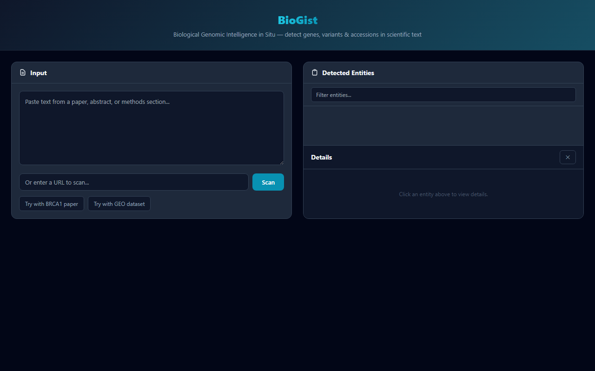
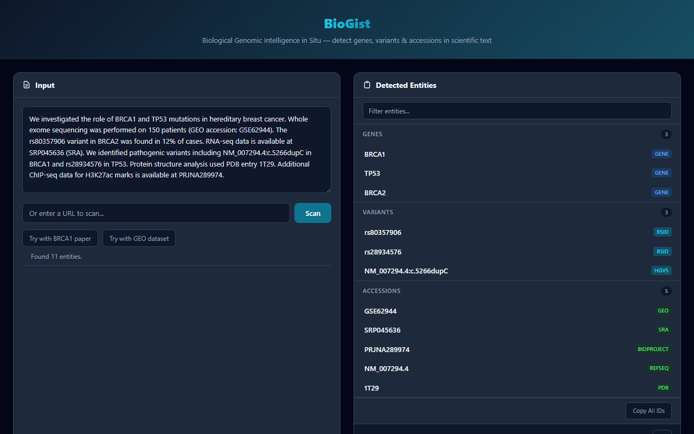
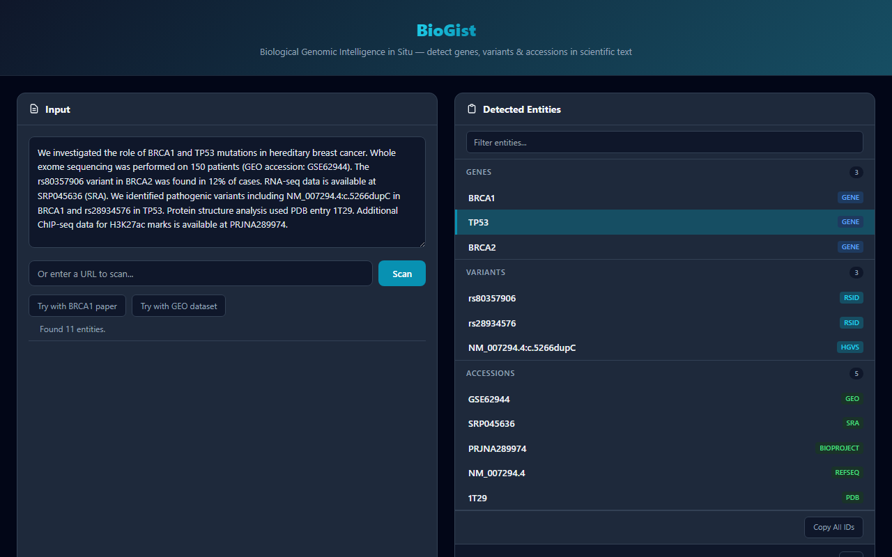

Biological Genomic Intelligence in Situ — instant gene, variant, and accession lookup on any paper.

Paste text or enter URL

Detected entities from a paper

Entity detail with API data
| Type | Examples | Highlight |
|---|---|---|
| Genes | BRCA1, TP53, EGFR, KRAS, MTHFR, APOE — 334 curated human gene symbols | purple |
| Variants | rsIDs (rs28934576), HGVS (NM_007294.4:c.5266dupC), ClinVar (VCV...), COSMIC (COSM...) |
cyan |
| Accessions | GEO (GSE/GSM), SRA (SRR/SRP), BioProject (PRJNA), Ensembl (ENSG), PDB, PMID, DOI |
amber |
| Species | Human, Mouse, Rat, Drosophila, C. elegans, Zebrafish, Yeast, Arabidopsis, E. coli | green |
| File Links | FASTQ, BAM, VCF, BED, GFF, CSV, and 20+ other bioinformatics formats | rose |
After scanning, BioGist highlights detected entities directly on the page. Genes appear in purple, variants in cyan, and accessions in amber. Click any highlighted term to jump to its details in the sidebar.
Click a detected gene to see:
Click a detected variant (rsID, HGVS, ClinVar, or COSMIC) to see:
Click a GEO or SRA accession to see:
One click copies all detected accessions as a newline-separated list, ready to paste into a spreadsheet, script, or search tool.
When BioGist detects links to bioinformatics files (FASTQ, VCF, BED, etc.) on the page, click "Open in BLViewer" to send them directly to BLViewer for visualization and analysis.
For detected SRR accessions, BioGist generates a ready-to-use fasterq-dump command:
fasterq-dump --split-3 SRR1234567 -O ./outputClick to copy the command to your clipboard.
Use the search box at the top of the sidebar to filter detected entities by keyword. Matches are filtered across all entity types in real time.
Select any text on a webpage, right-click, and choose "Look up in BioGist" from the context menu. BioGist will attempt to identify it as a gene, variant, or accession and show details in the sidebar.
API results from NCBI, UniProt, and gnomAD are cached locally in Chrome storage for 24 hours. Repeat lookups for the same entities load instantly without additional API calls.
| Action | How |
|---|---|
| Toggle sidebar | Click the BioGist extension icon in your toolbar |
| Look up selected text | Select text on page, right-click → "Look up in BioGist" |
| Scan page | Click "Scan Page" button in sidebar header |
| Copy all IDs | Click "Copy All" in the sidebar footer |
| Problem | Solution |
|---|---|
| No entities detected | The page may not contain recognized gene symbols or accessions. Try selecting specific text and right-clicking → "Look up in BioGist". |
| API errors or timeouts | NCBI has rate limits (3 requests/sec without an API key). Wait a moment and try again. Cached results are not affected. |
| Sidebar not opening | Ensure the extension is enabled at chrome://extensions. Try refreshing the page, then clicking the icon again. |
| Highlights not visible | Some sites use CSS that conflicts with highlighting. Entity results are still available in the sidebar even if page highlights do not appear. |
| Missing gene symbol | The curated list covers 334 common human genes. For unlisted genes, select the name and use right-click → "Look up in BioGist". |
BioGist — Biological Genomic Intelligence in Situ
Built by Oric Labs. Part of the BioLang ecosystem.
BioGist is designed for researchers, bioinformaticians, and students who read scientific papers and want instant context on the genes, variants, and datasets mentioned in them — without leaving the page.